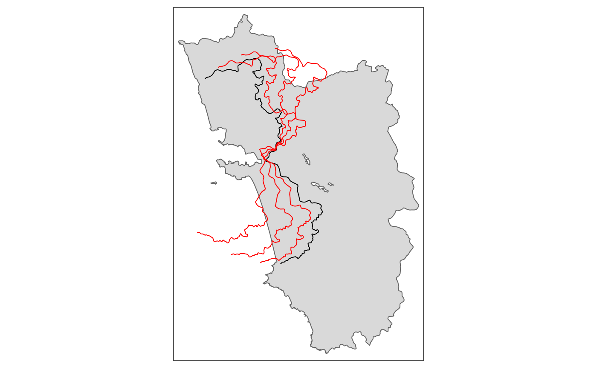
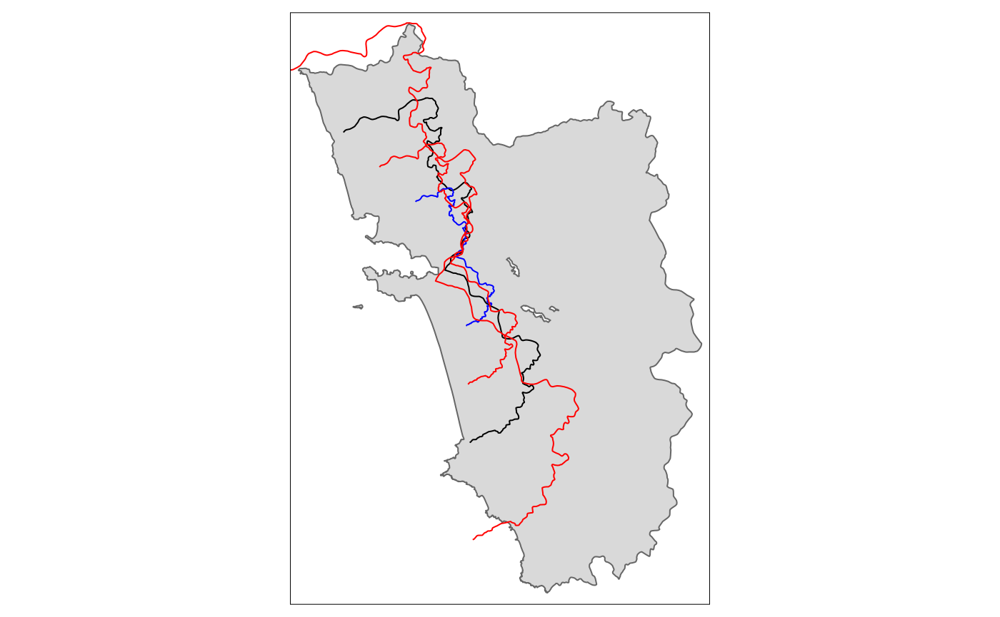
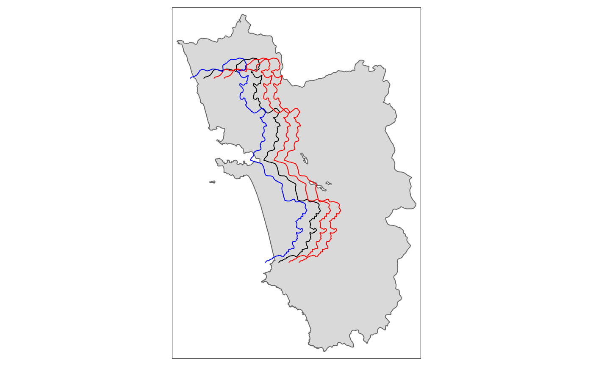
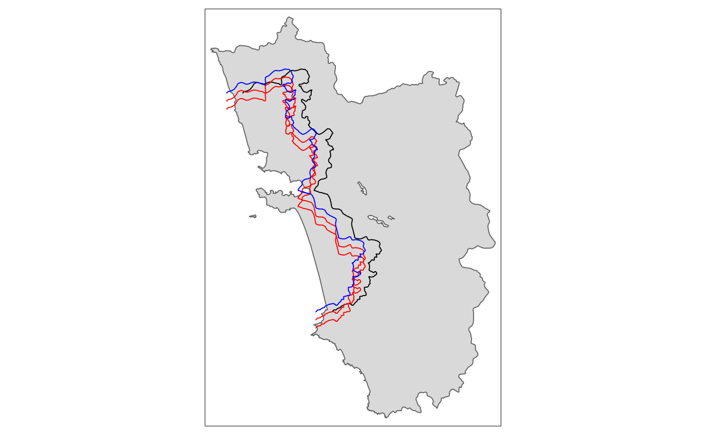
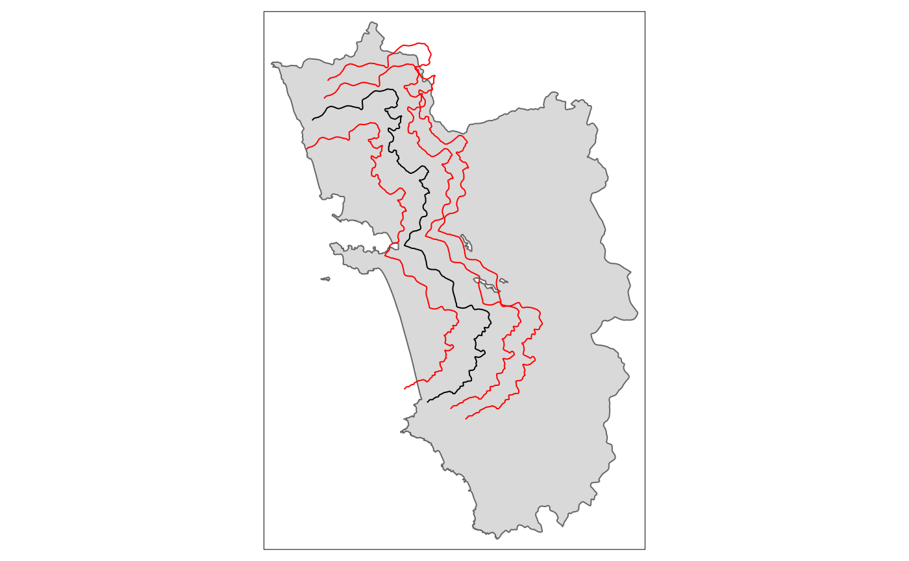
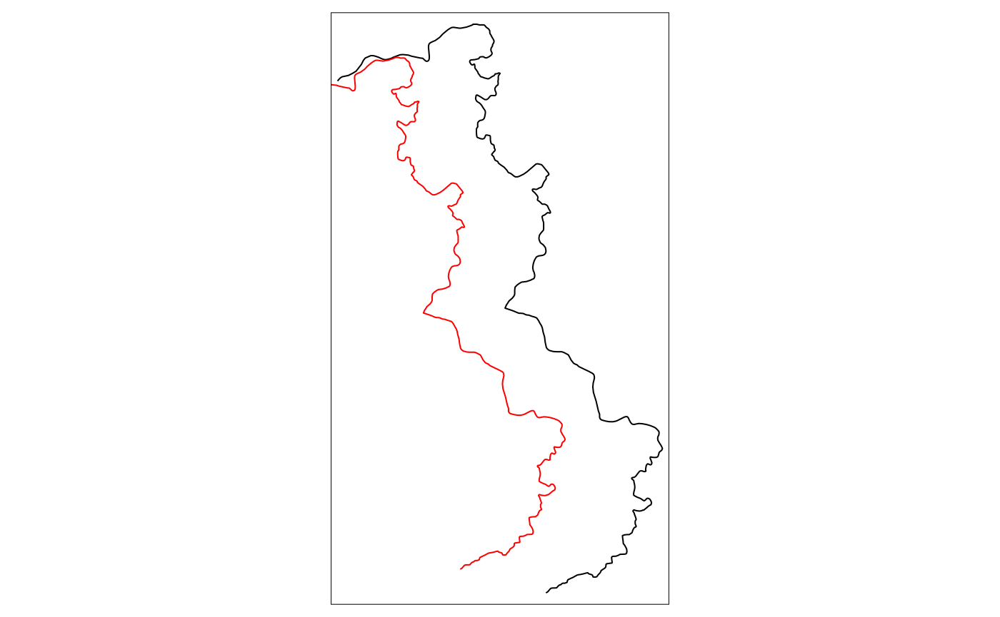
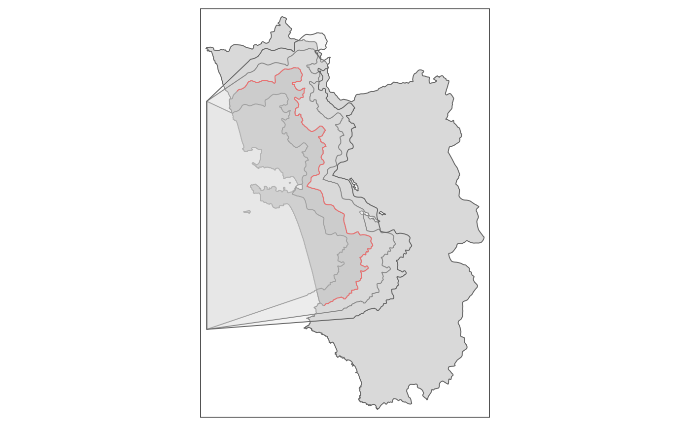

Shifting Borders, Creating Polygons from Lines
shifting_borders.RmdOne of the most tedious tasks when it comes to geographic RDDs is the execution of so-called placebo checks. With these one has to show that the postulated effect disappears when the RD cutoff is shifted around. In other words, the “treated dummy” has to be insignificant when the RD estimation is carried out on any other border. Already the shifting around of the border would be very cumbersome when it is carried out in a GIS API such as QGIS or ArcGIS. Here in R, thanks to the sf package and its simple features, this is not that much of a problem as we saw in the main vignette of SpatialRDD already. Even though it is not as straightforward as it sounds because shifting a cutoff by a certain distance up or down and left or right is not quite enough most of the time as borders are never straight lines. Thus we tipically also need a shrinkage or enlargement and quite often also a transformation to change the “angle”. Furthermore we need to determine which dots on the map are the newly treated ones after we moved our cutoff. And this is where it gets tricky. Simple distance calculations to the border do not help because they don’t tell us on which side of the cutoff a point is. Since borders are never straight lines and always have odd shapes we also cannot just come up with a rule based on x- and y-coordinates. And even if we could it would be very tedious to figure out after every shift which were the exact positions in space below/above the units count as treated. Thus the only generalizeable solution left is to come up with a polygon shape that covers the “placebo treated” area. This is where the SpatialRDD package comes in with a very generic solution that allows to carry out a myriad of such placebochecks without having to worry about details.
library(SpatialRDD); data(cut_off.sf, polygon_full.sf, polygon_treated.sf)
library(tmap)
set.seed(1088) # set a seed to make the results replicable
points_samp.sf <- sf::st_sample(polygon_full.sf, 1000)
points_samp.sf <- sf::st_sf(points_samp.sf) # make it an sf object bc st_sample only created the geometry list-column (sfc)
points_samp.sf$id <- 1:nrow(points_samp.sf) # add a unique ID to each observationMore on placebo bordering
When the border is not approximating a line in space but is curving and bending (i.e. in most cases), “placebo bordering” can be tricky and is not straightforward. The simple substraction/addition of a specified distance from the distance2cutoff variable is also not a very accurate description of placebo boundary. On top of that with such a simple transformation of the distance column we can at best do a placebo check on the “pooled” polynomial specification as the border segments change and thus the assignment of categories for fixed effects. A placebo GRD design with an iteration over the boundarypoints is literally impossible in such a case.
For a proper robustness check we thus have to create a new cut-off from which we then can extract the corresponding borderpoints (with discretise_border()) and also assign the border segment categories for fixed effects estimations (with border_segment()).
The shift_border() function can execute three different (affine) transformations at the same time:
-
"shift"in units of CRS along the x- & y-axis (provided with the optionshift = c(dist1, dist2)) -
"scale"in percent around the centroid, where0.9would mean 90% -
"rotate"in degrees around the centroid with the standard rotation matrix \[ rotation = \begin{bmatrix} \cos \theta & -\sin \theta \\ \sin \theta & \cos \theta \\ \end{bmatrix} \]
Rotate
tm_rotate.sf10 <- shift_border(border = cut_off.sf, operation = "rotate", angle = 10)
#> Pay attention to CRS! If you work in lon/lat then degrees have to be provided. Local UTM CRS is preferable!
tm_rotate.sf25 <- shift_border(border = cut_off.sf, operation = "rotate", angle = 25)
#> Pay attention to CRS! If you work in lon/lat then degrees have to be provided. Local UTM CRS is preferable!
tm_rotate.sf45 <- shift_border(border = cut_off.sf, operation = "rotate", angle = 45)
#> Pay attention to CRS! If you work in lon/lat then degrees have to be provided. Local UTM CRS is preferable!
tm_shape(polygon_full.sf) + tm_polygons() + tm_shape(cut_off.sf) + tm_lines() +
tm_shape(tm_rotate.sf10) + tm_lines(col = "red") +
tm_shape(tm_rotate.sf25) + tm_lines(col = "red") +
tm_shape(tm_rotate.sf45) + tm_lines(col = "red")
Scale
tm_scale.sf.4 <- shift_border(border = cut_off.sf, operation = "scale", scale = .4)
#> Pay attention to CRS! If you work in lon/lat then degrees have to be provided. Local UTM CRS is preferable!
tm_scale.sf.7 <- shift_border(border = cut_off.sf, operation = "scale", scale = .7)
#> Pay attention to CRS! If you work in lon/lat then degrees have to be provided. Local UTM CRS is preferable!
tm_scale.sf1.5 <- shift_border(border = cut_off.sf, operation = "scale", scale = 1.5)
#> Pay attention to CRS! If you work in lon/lat then degrees have to be provided. Local UTM CRS is preferable!
tm_shape(polygon_full.sf) + tm_polygons() + tm_shape(cut_off.sf) + tm_lines() +
tm_shape(tm_scale.sf.4) + tm_lines(col = "blue") +
tm_shape(tm_scale.sf.7) + tm_lines(col = "red") +
tm_shape(tm_scale.sf1.5) + tm_lines(col = "red")
Shift
tm_shift.sf3 <- shift_border(border = cut_off.sf, operation = "shift", shift = c(3000, 0))
#> Pay attention to CRS! If you work in lon/lat then degrees have to be provided. Local UTM CRS is preferable!
tm_shift.sf6 <- shift_border(border = cut_off.sf, operation = "shift", shift = c(6000, 0))
#> Pay attention to CRS! If you work in lon/lat then degrees have to be provided. Local UTM CRS is preferable!
tm_shift.sf_4 <- shift_border(border = cut_off.sf, operation = "shift", shift = c(-4000, 0))
#> Pay attention to CRS! If you work in lon/lat then degrees have to be provided. Local UTM CRS is preferable!
tm_shape(polygon_full.sf) + tm_polygons() + tm_shape(cut_off.sf) + tm_lines() +
tm_shape(tm_shift.sf3) + tm_lines(col = "red") +
tm_shape(tm_shift.sf6) + tm_lines(col = "red") +
tm_shape(tm_shift.sf_4) + tm_lines(col = "blue")
tm_shift.sf_42 <- shift_border(border = cut_off.sf, operation = "shift", shift = c(-4000, -2000))
#> Pay attention to CRS! If you work in lon/lat then degrees have to be provided. Local UTM CRS is preferable!
tm_shift.sf_44 <- shift_border(border = cut_off.sf, operation = "shift", shift = c(-4000, -4000))
#> Pay attention to CRS! If you work in lon/lat then degrees have to be provided. Local UTM CRS is preferable!
tm_shape(polygon_full.sf) + tm_polygons() + tm_shape(cut_off.sf) + tm_lines() +
tm_shape(tm_shift.sf_42) + tm_lines(col = "red") +
tm_shape(tm_shift.sf_44) + tm_lines(col = "red") +
tm_shape(tm_shift.sf_4) + tm_lines(col = "blue") 
From the last shifted line we can already see that a movement along the x-axis quite often requires also a correction on the y-axis for the cut-off movement to be meaningful. This is going to be explored in detail in the following section together with all the other operations.
Full fledged “placebo bordering”
A proper placebo border ideally involves both a shift and a re-scaling for it to be meaningful.
tm_placebo.sf1 <- shift_border(border = cut_off.sf, operation = c("shift", "scale"), shift = c(-5000, -3000), scale = .85)
#> Pay attention to CRS! If you work in lon/lat then degrees have to be provided. Local UTM CRS is preferable!
tm_placebo.sf2 <- shift_border(border = cut_off.sf, operation = c("shift", "scale"), shift = c(4000, 2000), scale = 1.1)
#> Pay attention to CRS! If you work in lon/lat then degrees have to be provided. Local UTM CRS is preferable!
tm_placebo.sf3 <- shift_border(border = cut_off.sf, operation = c("shift", "scale"), shift = c(6000, 3000), scale = 1.2)
#> Pay attention to CRS! If you work in lon/lat then degrees have to be provided. Local UTM CRS is preferable!
tm_shape(polygon_full.sf) + tm_polygons() + tm_shape(cut_off.sf) + tm_lines() +
tm_shape(tm_placebo.sf1) + tm_lines(col = "red") +
tm_shape(tm_placebo.sf2) + tm_lines(col = "red") +
tm_shape(tm_placebo.sf3) + tm_lines(col = "red")
tm_shift.sf <- shift_border(border = cut_off.sf, operation = c("shift", "rotate", "scale"),
shift = c(-10000, -1000), angle = 0, scale = .9)
#> Pay attention to CRS! If you work in lon/lat then degrees have to be provided. Local UTM CRS is preferable!
tm_shape(cut_off.sf) + tm_lines() + tm_shape(tm_shift.sf) + tm_lines(col = "red")
And the according polygons to assign the treated dummies:
polygon1 <- cutoff2polygon(data = points_samp.sf, cutoff = tm_placebo.sf1, orientation = c("west", "west"), endpoints = c(.8, .2), # corners = 0,
# crs = 32643
)
polygon2 <- cutoff2polygon(data = points_samp.sf, cutoff = tm_placebo.sf2, orientation = c("west", "west"), endpoints = c(.8, .2), # corners = 0,
# crs = 32643
)
polygon3 <- cutoff2polygon(data = points_samp.sf, cutoff = tm_placebo.sf3, orientation = c("west", "west"), endpoints = c(.8, .2), # corners = 0,
# crs = 32643
)
tm_shape(polygon_full.sf) + tm_polygons() +
tm_shape(polygon_treated.sf) + tm_polygons(col = "grey") +
tm_shape(cut_off.sf) + tm_lines(col = "red") +
tm_shape(polygon1) + tm_polygons(alpha = .3) +
tm_shape(polygon2) + tm_polygons(alpha = .3) +
tm_shape(polygon3) + tm_polygons(alpha = .3) 